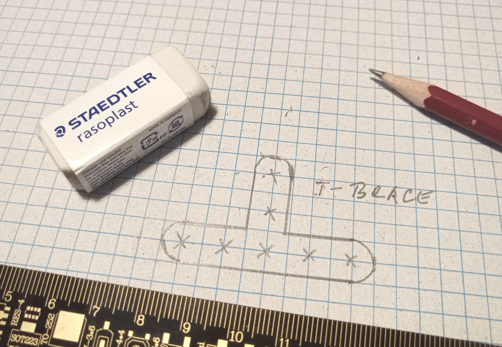
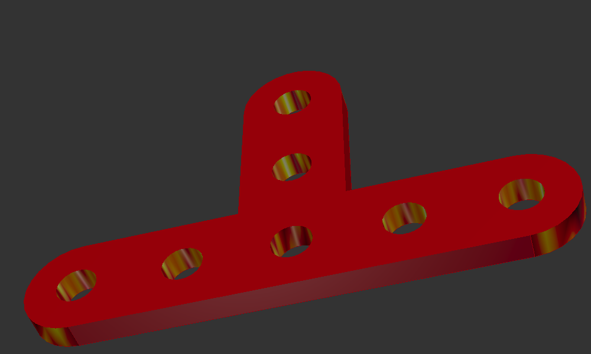
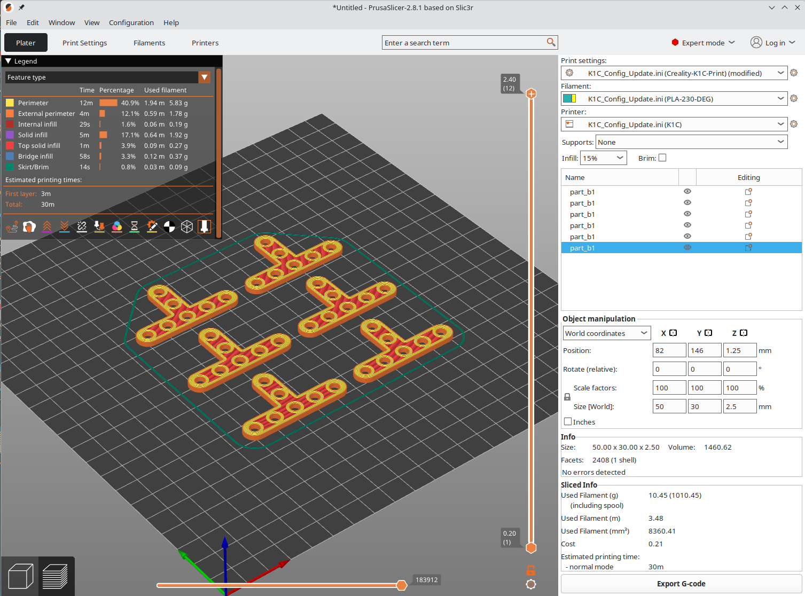

Vytváranie dielov #
{kind=link}
Pri návrhu vlastných modelov a konštrukcií môže vzniknúť potreba použitia dielu, ktorý sa nenachádza v knižnici komponentov. V inom prípade potrebujeme vytvoriť neštandardný diel ako je napríklad držiak motora, serva, senzora. Nové diely môžeme vytvárať pomocou skriptov v programovacom jazyku Python využitím knižníc pre tvorbu komponentov a ich kombináciou pomocou logických operácií. Pokročilí uživatelia môžu pri tvorbe dielov využívať aj vlastnosti knižnice CadQuery, pomocou ktorej je knižnica Stemfe-X naprogramovaná.
Príklad konštrukcie nového dielu #
Pri návrhu našej konštrukcie sme zistili, že potrebujeme spojku v tvare T o hrúbke 1/4 BU. Pri návrhu môžeme ako pomôcku na náčrty používať štvorčekový papier s rastrom 5mm (BU/2), na ktorom získame predstavu o skutočnej veľkosti dielov.
{kind=link}

Obr. 25 Náčrt dielu na štvorčekovom papieri.#
Náš diel do stavebnice “vyrobíme” naprogramovaním v jazyku Python s použitím knižníc pre projektovanie dielov. K výrobe dielu potrebujeme
elementárne znalosti informatiky a programovania, najlepšie v Pythone (súbor, adresár, spustenie programu, základné syntaktické konštrukcie, práca s knižnicami)
nainštalovaný editor CQ-Editor s knižnicou CadQuery a v pracovnom adresári rozbalenú knižnicu pre Stemfie-X podľa návodu
nainštalované programy pre prehliadanie podkladov pre 3D tlač a generovanie dát pre tlačiareň
znalosť práce s 3D tlačiarňou
{kind=link}
Export podkladov pre tlač #
Program vygeneruje príkazom b1.export_step(‘part_b1’) podklady pre tlač vo formáte STEP. Tento formát je bezstratový, obsahuje vnútornú štruktúru objektu a vygenerované dáta je možné používať v kompatibilných CAD systémoch, napríklad FreeCAD.
Podklady je možné vygenerovať aj vo formáte STL príkazom b1.export_stl(‘part_b1’), ktorý je tak isto možné použiť pre 3D tlač, formát STL je stratový, obsahuje len vonkajšie plochy objektu.
Exportované dáta môžeme prehliadať vo vhodnom prehliadači, napríklad f3d
{kind=link}

Obr. 27 Prehliadanie vygenerovaných dát v prehliadači f3d.#
3D Tlač #
Vytvorené dáta spracujeme programom pre generovani povelového kódu pre 3D tlačiareň (gcode). Presný postup závisí od použitej tlačiarne, na obrázku je spracovanie podkladov pre tlač pomocou programu PrusaSlicer.
{kind=link}

Obr. 28 Generovanie dát pre 3D tlač.#